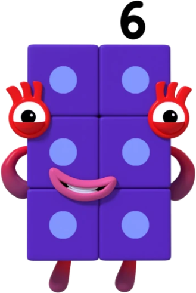
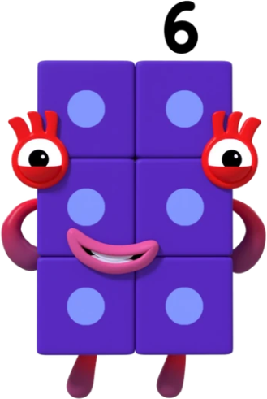

Más amigos, más diversión!


 



Sumas Mágicas
Ayuda a UNO y sus amigos a juntar bloques y ver cómo sus números crecen al sumar. Cada vez que sumas correctamente, los NumberBlocks ganan fuerza y desbloquean sorpresas mágicas. ¡Descubre cómo los números se combinan para formar resultados increíbles!
Rompecabezas de Restas
Acompaña a UNO en un recorrido lleno de obstáculos donde solo podrás avanzar restando bloques correctamente. Observa cómo los personajes se transforman cuando restan, ¡y resuelve cada rompecabezas para llegar a la meta!
Carrera de Conteo
Corre contra el reloj mientras cuentas bloques en secuencia para ayudar a los NumberBlocks a llegar al final. ¡Cada número correcto te da una ventaja extra! Con cada carrera, aprenderás a contar y a pensar rápido.
Encuentra el Número Oculto
Busca entre los escenarios y ayuda a UNO a encontrar el número perdido para completar la secuencia. ¡Cada número oculto revela una sorpresa especial! Observa bien y explora cada rincón para descubrir dónde se esconde.
Desafío de Comparación
En este reto, debes ayudar a UNO a identificar qué NumberBlock es mayor o menor. Aprende sobre la comparación de números mientras los personajes se colocan en orden de tamaño, ¡y desbloquea recompensas cada vez que aciertes!
Forma el Número Correcto
¿Puedes combinar los bloques para crear el número solicitado? Elige los números correctos y únelos para formar nuevos resultados. ¡Es una forma divertida de practicar la construcción de números y descubrir cómo encajan!
Encuentra el Número Oculto
Busca entre los escenarios y ayuda a UNO a encontrar el número perdido para completar la secuencia. ¡Cada número oculto revela una sorpresa especial! Observa bien y explora cada rincón para descubrir dónde se esconde.
Salto de Sumas
Lleva a UNO a saltar de bloque en bloque sumando números a medida que avanzas. La meta es llegar al otro lado, ¡y solo podrás hacerlo si sumas correctamente! Cada salto exitoso te acerca a un nuevo nivel.
Rompecabezas de Secuencias
Ayuda a UNO a completar series de números en orden ascendente o descendente. Observa los patrones y arrastra el número correcto para terminar la secuencia. ¡Cada secuencia completada revela una animación especial!
El Desafío del Doble
Descubre qué sucede cuando multiplicas un NumberBlock por dos. Ayuda a UNO a duplicar números y ver cómo crecen rápidamente. ¡Una manera emocionante de aprender el concepto de "el doble" y multiplicación básica!
Aventura de Divisiones
Guía a UNO y sus amigos mientras dividen bloques en partes iguales. Divide los bloques correctamente para que cada NumberBlock tenga su parte justa. Un desafío perfecto para entender la división de una forma divertida y visual.
Suma de Amigos
Haz que UNO se junte con otros personajes para ver cómo los números crecen en equipo. Los niños aprenderán cómo las sumas se construyen cuando se unen varios bloques, ¡formando un número mayor cada vez!